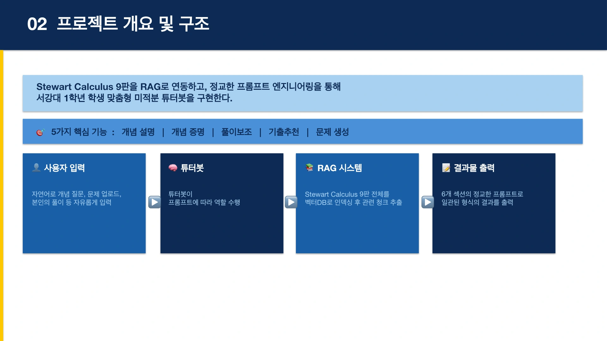

PROJECT 10 / 교육 · 검색 증강 생성PROJECT 10 / Education · Retrieval-Augmented Generation
서강대 학생들을 위한 미적분 수학 튜터Calculus Math Tutor for Sogang University Students
교재·기출문제에 근거한 설명과 단계별 힌트로 스스로 풀이하는 과정을 지원합니다.Supports self-directed problem solving with explanations grounded in the textbook and past exams and with step-by-step hints.
01 문제 상황 Problem
미적분을 배우는 학생은 정의와 증명을 이해하는 것, 막힌 풀이를 이어 가는 것, 시험 유형을 연습하는 데 서로 다른 도움이 필요합니다. 수업 교재와 연결된 튜터가 개념부터 문제 연습까지 일관되게 지원하도록 설계했습니다.Students learning calculus need different kinds of help with understanding definitions and proofs, getting unstuck in a solution, and practicing exam-style problems. The tutor was designed to connect to the course textbook and provide consistent support from concepts to problem practice.
02 사용 모델과 데이터 Models and Data
모델·기술Models · Techniques
- 교재·기출문제 검색을 결합한 RAG 방식의 생성형 AI 튜터. 기반 모델의 정확한 버전은 자료에 명시되지 않았습니다.A RAG-based generative AI tutor combining textbook and past exam search. The exact version of the base model is not specified in the materials.
- 개념 설명·증명·힌트·문제 생성마다 다른 출력 규칙을 둔 구조화 프롬프트를 사용했습니다.Used structured prompts with different output rules for concept explanations, proofs, hints, and problem generation.
데이터·입력Data · Inputs
- Stewart Calculus 9판과 미적분 기출 시험지 PDF.Stewart Calculus, 9th edition, and PDFs of past calculus exams.
- 학생의 개념 질문, 문제와 풀이 과정. 필요에 따라 Plotly를 활용한 그래프 설명을 구성했습니다.Students' conceptual questions, problems, and solution steps. Graph-based explanations using Plotly were composed as needed.
03 구현 과정 Implementation
- 질문을 개념 설명, 증명, 풀이 보조, 기출 연습 유형으로 구분합니다.Classifies questions into concept explanation, proof, solution assistance, and past exam practice.
- 관련 교재와 기출 내용을 찾아 정의·설명과 출처 페이지를 연결합니다.Retrieves relevant textbook and past exam content, linking definitions and explanations to their source pages.
- 풀이 보조에서는 최대 세 단계의 힌트를 제공하고, 연습에는 기출 유형을 반영한 유사 문제를 생성합니다.Solving assistance provides up to three levels of hints, and practice mode generates similar problems modeled on past exam types.

04 핵심 결과 Key Results
- 개념 설명은 맥락·정의·핵심 요약·예시로, 증명은 전제·단계·정리로 나누는 튜터 응답 구조를 설계했습니다.Designed a tutor response structure that splits concept explanations into context, definition, key summary, and examples, and proofs into premises, steps, and conclusion.
- 정답을 바로 제시하기보다 막힌 지점을 확인하고 단계적으로 돕는 시연 시나리오를 구성했습니다.Designed a demo scenario that identifies where the student is stuck and helps step by step, rather than giving the answer directly.
05 한계와 발전 방향 Limitations and Next Steps
- 유사하지만 다른 교재 페이지를 검색하거나 이미지 속 수식·기호를 제대로 인식하지 못할 수 있습니다.It may retrieve similar but incorrect textbook pages or fail to correctly recognize formulas and symbols in images.
- 풀이 정확도와 실제 학업 성취 향상을 검증한 수치가 제시되지 않았습니다. 검색 청크 조정과 재정렬은 개선 과제입니다.No figures were presented validating solution accuracy or actual gains in academic achievement. Retrieval chunk tuning and reranking remain as improvement tasks.
자료: 최종보고서 및 발표자료. 제출 자료를 바탕으로 정리했으며, 결과는 해당 프로젝트의 구현·실험 범위에 해당합니다.Source: final report and presentation slides. Summarized from the submitted materials; results reflect the scope of the project's implementation and experiments.